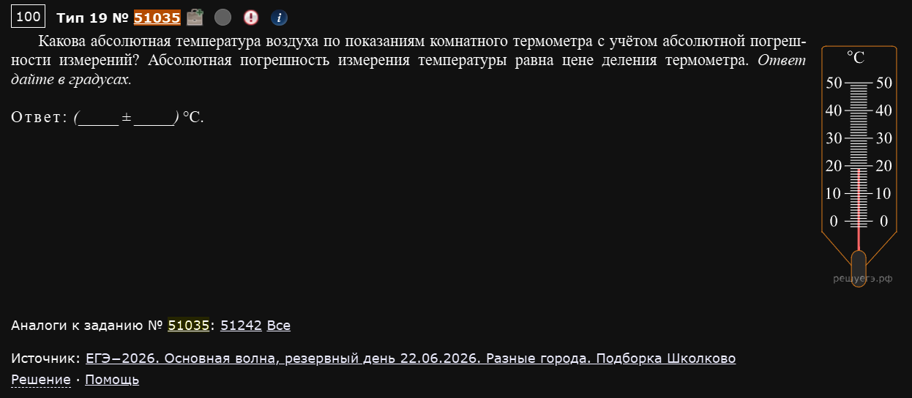
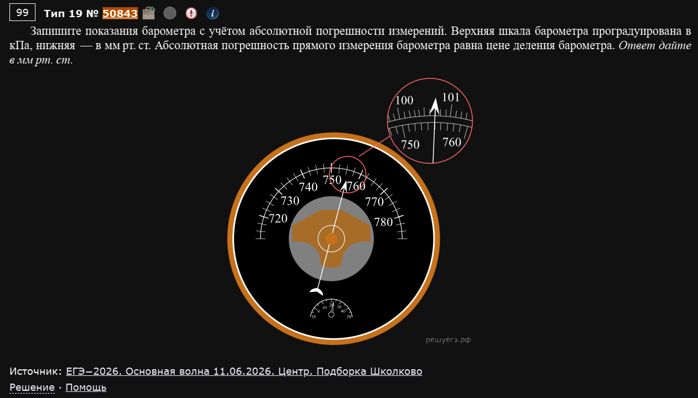
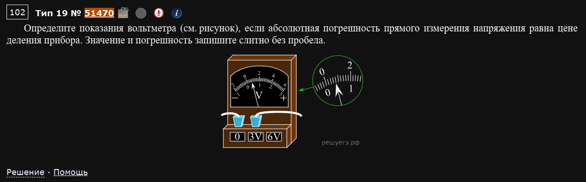
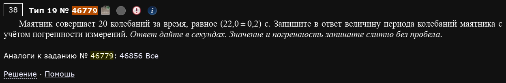
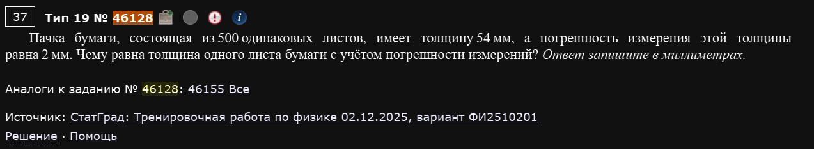
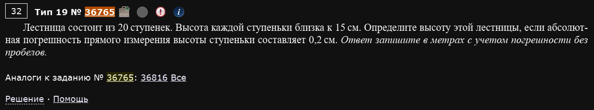
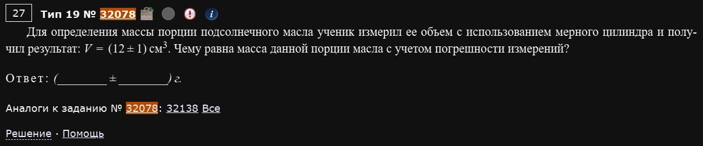

№19. Механика — квантовая физика. Показания измерительных приборов
Две принципиально разные подтемы под одним номером: прямая погрешность (снять показание прибора со шкалы и сразу приписать к нему погрешность, равную цене деления) и косвенная погрешность (значение получено не напрямую, а через формулу — и погрешность нужно правильно пересчитать по этой формуле).
Погрешность прямых измерений
Алгоритм один и тот же для любого прибора
- Найдите цену деления — расстояние между соседними чёрточками шкалы, выраженное в единицах измерения (не просто “соседние чёрточки”, а конкретное число: если между подписанными “20” и “30” ровно 10 маленьких делений, цена деления = 1).
- Снимите показание — до какой чёрточки доходит стрелка/столбик.
- Погрешность прямого измерения по условию всегда равна цене деления — просто берёте её как есть.
- Записываете в формате (показание ± погрешность), слитно, без пробела, если так просят в условии.
Пример 1) (Решу ЕГЭ №51035 — ЕГЭ-2026, основная волна, резервный день 22.06.2026, разные города, подборка Школково)

Какова абсолютная температура воздуха по показаниям комнатного термометра с учётом абсолютной погрешности измерений? Абсолютная погрешность измерения температуры равна цене деления термометра. Ответ дайте в градусах.
Шкала термометра размечена от 0 до 50°C с подписанными делениями через каждые 10°. Между соседними подписанными делениями (например, между 20 и 30) укладывается 10 мелких чёрточек — значит, цена деления составляет 1°C. Столбик ртути доходит до отметки на 1 деление ниже “20”.
Ответ: 191
Пример 2) (Решу ЕГЭ №50843 — ЕГЭ-2026, основная волна 11.06.2026, Центр, подборка Школково)

Запишите показания барометра с учётом абсолютной погрешности измерений. Верхняя шкала барометра проградуирована в кПа, нижняя — в мм рт. ст. Абсолютная погрешность прямого измерения барометра равна цене деления барометра. Ответ дайте в мм рт. ст.
У этого барометра сразу две шкалы на одном циферблате (кПа и мм рт. ст.) — важно читать показание именно по той, в которой просят дать ответ, а не по первой попавшейся. По нижней шкале (мм рт. ст.) между подписанными “750” и “760” укладывается 10 делений — цена деления 1 мм рт. ст. Стрелка стоит на несколько делений правее “750”.
Ответ: 7551
Разные шкалы
На одном циферблате может быть две (или больше) шкалы Барометры, манометры и некоторые вольтметры/амперметры часто рисуют сразу с двумя рядами цифр на одной дуге — например, кПа и мм рт. ст., или сразу две шкалы под разные пределы измерения. Всегда сверяйтесь с тем, в каких единицах просят дать ответ, и берите деления именно той шкалы, а не считайте автоматически по верхнему ряду чисел.
Пример 3) (Решу ЕГЭ №51470 — Демонстрационная версия ЕГЭ—2027 по физике)

Определите показания вольтметра (см. рисунок), если абсолютная погрешность прямого измерения напряжения равна цене деления прибора. Значение и погрешность запишите слитно без пробела.
У школьного вольтметра часто есть несколько пределов измерения (гнёзд “0”, “3V”, “6V”) — щупы подключены не абы куда, а к конкретной паре гнёзд, и от этого зависит, что означает шкала прибора. На рисунке провода воткнуты в гнёзда “0” и “3V” — значит, работает предел 3В, а не 6В.
Шкала прибора расчерчена цифрами 0-2-4-6 (это “родные” деления шкалы), но раз выбран предел 3В (а не 6В), реальное напряжение в два раза меньше того, что показывает шкала буквально: цифра “6” на шкале в этом режиме означает не 6В, а 3В. Стрелка стоит на делении 0,4
Цена деления по шкале прибора (мелкие чёрточки между 0 и 2, их 10) — 0,2 в шкальных единицах, то есть с той же поправкой на предел — 0,1В.
Ответ: 0,40,1
Сначала разберитесь с пределом измерения, потом уже читайте стрелку
Если у прибора несколько подписанных пределов (переключатель или несколько гнёзд подключения), первым делом определите, какой предел выбран — и только потом снимайте показание, сразу домножая (или деля) “сырое” значение шкалы на нужный коэффициент. Если пропустить этот шаг, ответ окажется больше или меньше истинного ровно в число раз, равное отношению пределов (здесь — вдвое).
Погрешность косвенных измерений
Главное правило подтемы
Если искомая величина получается из измеренной через умножение или деление на точно известное число (сколько раз что-то повторили, или табличную константу вроде плотности) — абсолютная погрешность меняется по тому же правилу, что и сама величина: если величину делим на N, то и её погрешность делим на N; если величину умножаем на N, то и погрешность умножаем на N.
Пример 1) (Решу ЕГЭ №46779)

Маятник совершает 20 колебаний за время, равное (22,0 ± 0,2) с. Запишите в ответ величину периода колебаний маятника с учётом погрешности измерений. Ответ дайте в секундах. Значение и погрешность запишите слитно без пробела.
Период — это время ОДНОГО колебания, то есть общее время нужно разделить на число колебаний (число точное, у него нет погрешности — маятник качнулся ровно 20 раз, а не “20±0,2 раза”). Раз саму величину делим на 20, погрешность тоже делим на 20:
Ответ: 1,10,01.
Пример 2) (Решу ЕГЭ №46128 — СтатГрад: тренировочная работа по физике 02.12.2025, вариант ФИ2510201)

Пачка бумаги, состоящая из 500 одинаковых листов, имеет толщину 54 мм, а погрешность измерения этой толщины равна 2 мм. Чему равна толщина одного листа бумаги с учётом погрешности измерений? Ответ запишите в миллиметрах.
Та же самая логика деления на точное число, только вместо “число колебаний” здесь “число листов”:
Ответ: 0,1080,004.
Пример 3) (Решу ЕГЭ №36765)

Лестница состоит из 20 ступенек. Высота каждой ступеньки близка к 15 см. Определите высоту этой лестницы, если абсолютная погрешность прямого измерения высоты ступеньки составляет 0,2 см. Ответ запишите в метрах с учётом погрешности без пробелов.
Здесь, в отличие от двух примеров выше, известна не сумма (которую надо поделить), а как раз одна “деталь” (высота ступеньки), а искомая величина — сумма из 20 таких деталей, то есть нужно умножить, а не разделить. Погрешность в этом случае тоже умножается на N, а не делится:
Ответ: 3,000,04.
Не путайте направление операции
Первые два примера и этот — зеркальные ситуации. Там известна была сумма (общее время, общая толщина пачки), и её делили на N, чтобы найти “один элемент” — там и погрешность делится. Здесь, наоборот, известен один элемент (одна ступенька), а ищем сумму (всю лестницу) — действие умножение, и погрешность тоже умножается. Определяйте по условию, что именно дано и что ищем, прежде чем решать, делить или умножать — не заучивайте один сценарий как единственно возможный.
Пример 4) (Решу ЕГЭ №32078)

Для определения массы порции подсолнечного масла ученик измерил её объём с использованием мерного цилиндра и получил результат: V = (12 ± 1) см³. Чему равна масса данной порции масла с учётом погрешности измерений?
Здесь роль “точно известного числа” играет не количество предметов, а табличная константа — плотность подсолнечного масла, кг/м³ (берётся из справочных данных в начале КИМ, у неё нет погрешности, в отличие от объёма, который реально измерили на глаз по мерному цилиндру).
Ответ: 10,80,9
"Точно известное число" — это не только счёт предметов
В примерах 1-3 роль точного множителя/делителя играло целое число (количество колебаний, листов, ступенек). Но с тем же успехом это может быть физическая константа из справочной таблицы (плотность, как здесь) или любая другая величина, у которой в условии просто не упомянута погрешность — раз она не упомянута, значит, считается точной, и вся погрешность результата целиком идёт от той величины, которая была измерена реально.